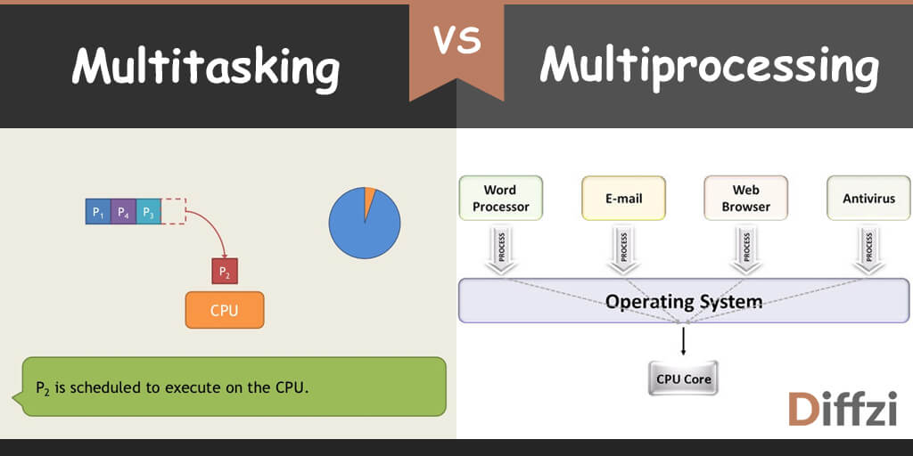

single-tasking system can only run one program at a time, while a multi-tasking operating system allows more than one program to be running in concurrency. This is achieved by time-sharing, where the available processor time is divided between multiple processes. These processes are each interrupted repeatedly in time slices by a task-scheduling subsystem of the operating system. Multi-tasking may be characterized in preemptive and co-operative types. In preemptive multitasking, the operating system slices the CPU time and dedicates a slot to each of the programs. Unix-like operating systems, such as Solaris and Linux—as well as non-Unix-like, such as AmigaOS—support preemptive multitasking. Cooperative multitasking is achieved by relying on each process to provide time to the other processes in a defined manner. 16-bit versions of Microsoft Windows used cooperative multi-tasking; 32-bit versions of both Windows NT and Win9x used preemptive multi-tasking.
